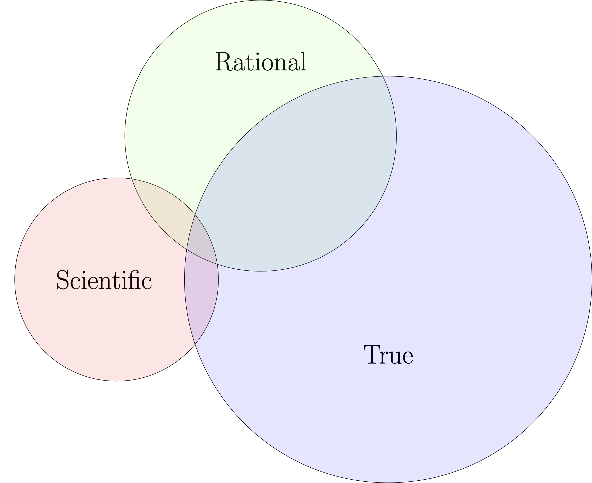

Page
Notes - Introduction to Science & Authority
Is science denial the only problem?
John Stewart on Crossfire in 2004
Observations and interpretations
As we have already noted, the phenomenon of science denial often involves lack of clarity about statements of fact and statements of opinion. When the facts themselves are debatable, it is helpful to distinguish observations (elementary facts) from interpretations (ideas about the meaning of observations).
The scientific, the rational, and the true
This one is my personal favorites. I think it is very useful to discriminate between three broad categories: the scientific, the rational, and the true. For any fact or opinion, any objective or subjective phenomenon, consider where it belongs on a Venn diagram in which the sets are imaginary containers for all things scientific, rational, and true.
